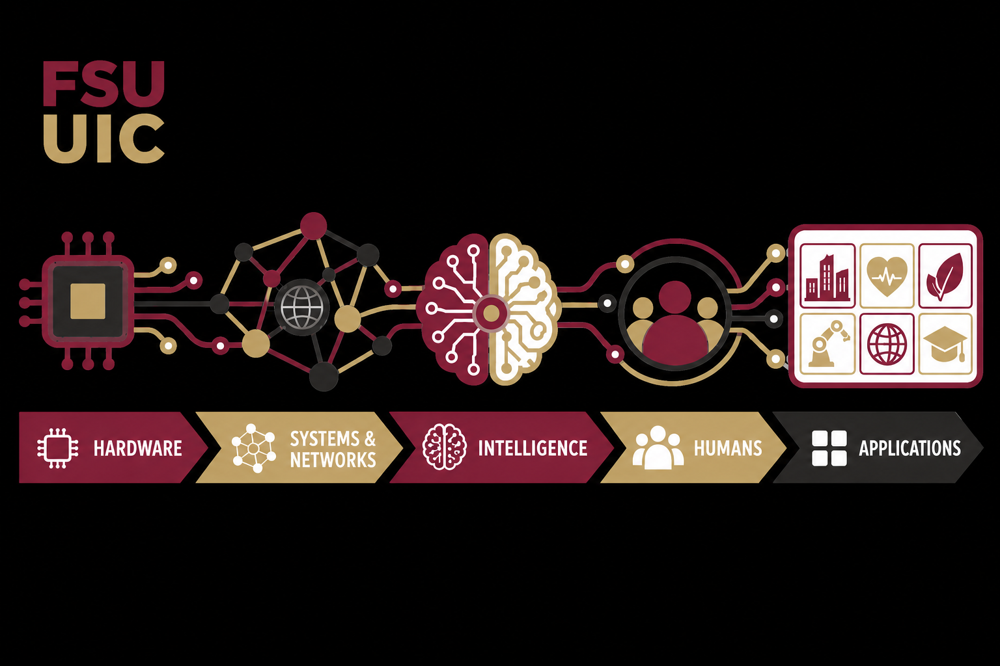

For students
Research across the computing continuum
Ubiquitous & Intelligence Computing Group
FSU UIC develops ubiquitous intelligent systems for real-world applications by integrating hardware, systems and networks, artificial intelligence, and human-centered computing. We bring together interdisciplinary teams to build, deploy, and evaluate responsible technologies that create meaningful value for people and society.

For partners & sponsors